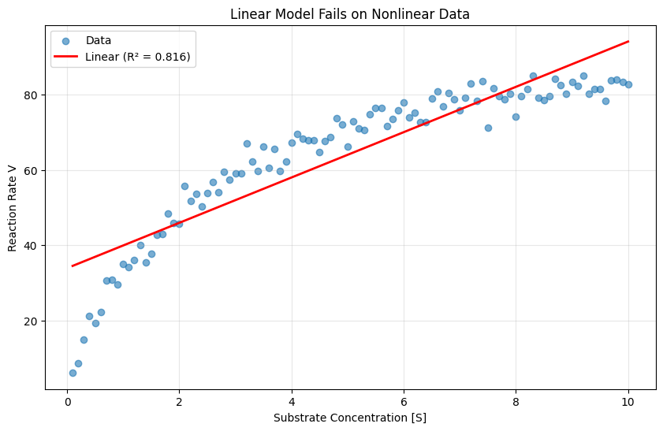
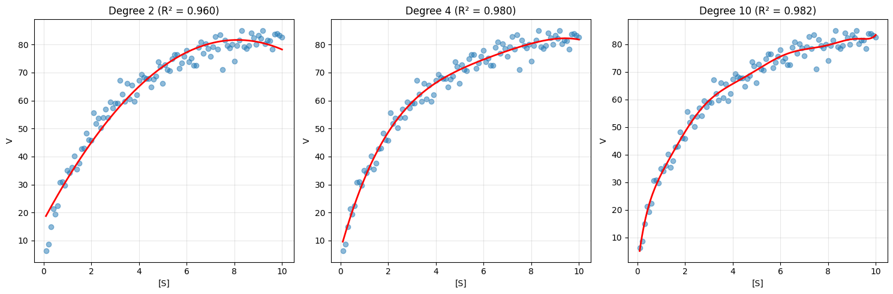
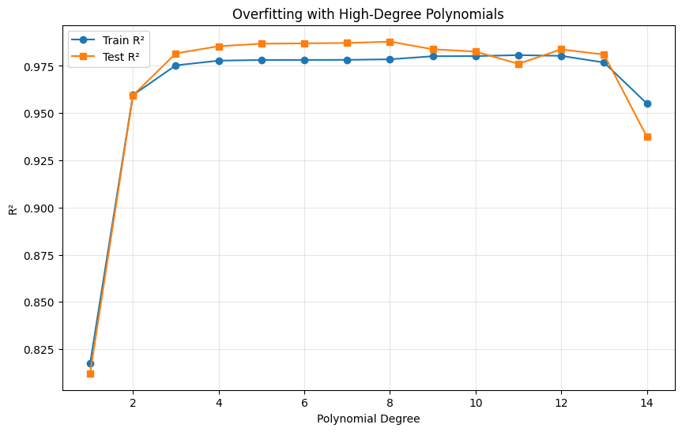
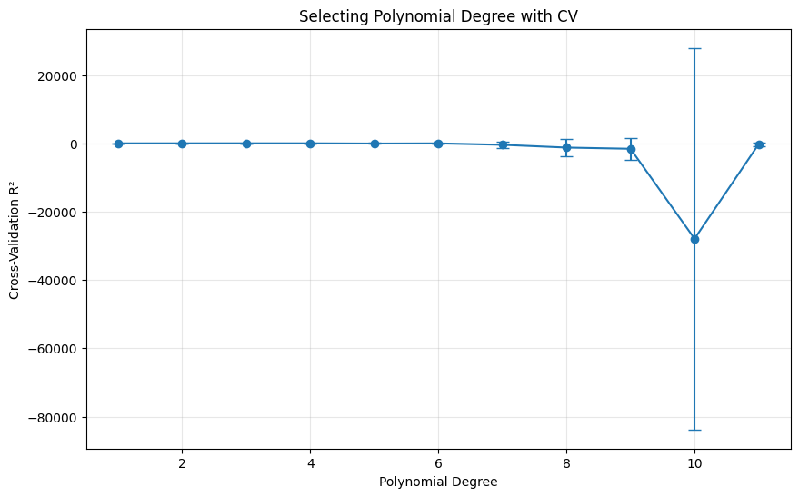
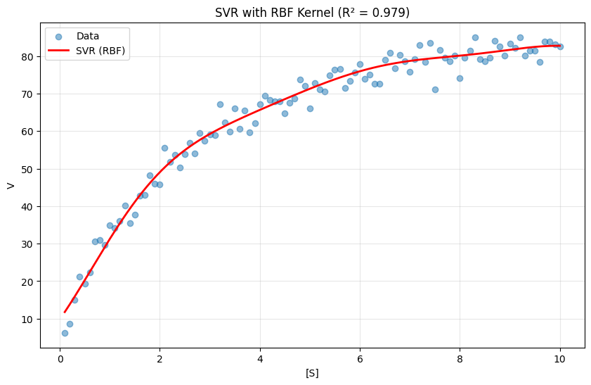
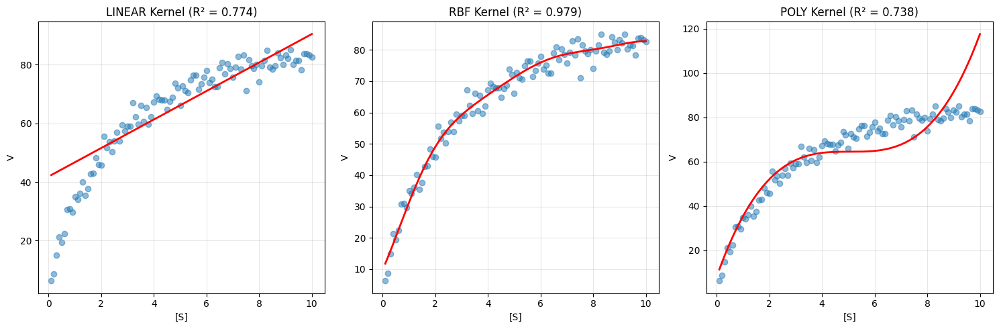
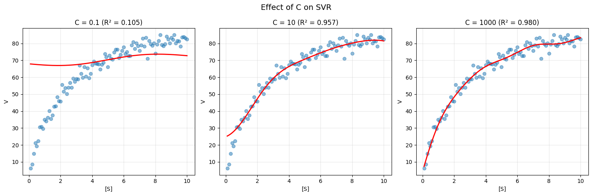
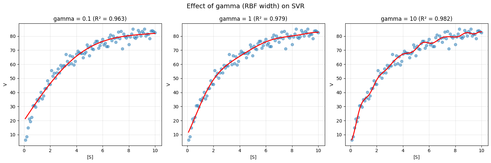
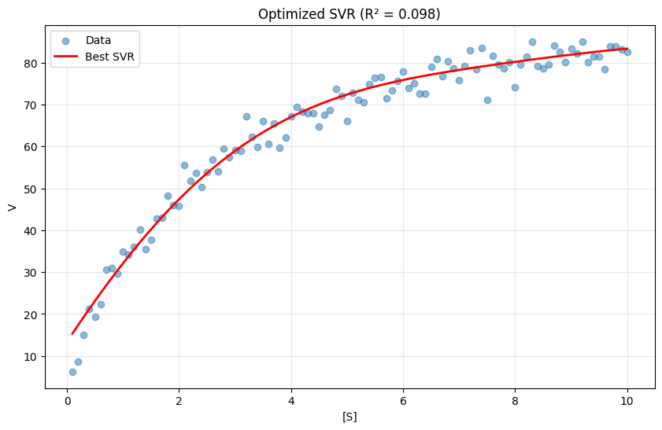
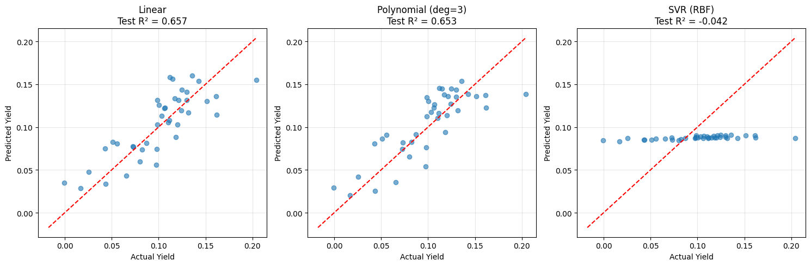

Module 09: Nonlinear Methods#
Modeling complex, nonlinear relationships.
Learning Objectives#
Recognize when linear models are insufficient
Apply polynomial features for nonlinear relationships
Use Support Vector Machines (SVMs) for regression
Understand kernel methods
Choose appropriate nonlinear models
import numpy as np
import pandas as pd
import matplotlib.pyplot as plt
from sklearn.linear_model import LinearRegression, Ridge
from sklearn.preprocessing import PolynomialFeatures, StandardScaler
from sklearn.svm import SVR
from sklearn.model_selection import train_test_split, cross_val_score, GridSearchCV
from sklearn.pipeline import Pipeline
from sklearn.metrics import mean_squared_error, r2_score
When Linear Models Fail: Recognizing Nonlinearity#
Linear models assume the relationship between features and target is a straight line (or hyperplane). But many real-world relationships are nonlinear:
Chemical Engineering Examples#
System |
Relationship |
Why It’s Nonlinear |
|---|---|---|
Enzyme kinetics |
Michaelis-Menten |
Saturation at high [S] |
Reaction rates |
Arrhenius |
Exponential temperature dependence |
Adsorption |
Langmuir isotherm |
Saturation of surface sites |
Heat transfer |
Radiation |
T⁴ dependence |
Mixing |
Log-mean differences |
Logarithmic average |
How to Detect Nonlinearity#
Plot residuals: If they show a curve, the relationship is nonlinear
Domain knowledge: You know the physics suggests a specific form
Low R² despite good features: Linear model can’t capture the pattern
Scatter plot inspection: Relationship visibly curves
Two Approaches to Nonlinearity#
Transform the data: Log, square root, inverse (if you know the form)
Use nonlinear models: Polynomial features, SVR, trees (if form is unknown)
# Load enzyme kinetics dataset
import pandas as pd
url = course_file('data/enzyme_kinetics.csv')
df_enzyme = pd.read_csv(url)
S = df_enzyme['substrate'].values
V = df_enzyme['rate'].values
print(f"Loaded {len(S)} data points")
Loaded 100 data points
# Try linear regression
X = S.reshape(-1, 1)
y = V
linear = LinearRegression()
linear.fit(X, y)
plt.figure(figsize=(10, 6))
plt.scatter(S, V, alpha=0.6, label='Data')
plt.plot(S, linear.predict(X), 'r-', linewidth=2, label=f'Linear (R² = {linear.score(X, y):.3f})')
plt.xlabel('Substrate Concentration [S]')
plt.ylabel('Reaction Rate V')
plt.title('Linear Model Fails on Nonlinear Data')
plt.legend()
plt.grid(True, alpha=0.3)
plt.show()

Polynomial Features: The Simple Extension#
The easiest way to capture nonlinearity is to add polynomial terms. Transform:
Then apply linear regression on these expanded features. The model is still linear in parameters (just fitting coefficients), but nonlinear in the input.
The Tradeoff#
Degree |
Flexibility |
Risk |
|---|---|---|
1 |
Linear only |
Underfitting |
2 |
Captures curvature |
Usually safe |
3-4 |
More complex shapes |
Often good balance |
5+ |
Very flexible |
High overfitting risk |
The Explosion of Features#
With d features and polynomial degree p, you get: $\(\binom{d+p}{p}\)$ features
For d=10 features, degree=3: 286 features!
This is why polynomial features are best for:
Few original features (1-5)
Moderate degrees (2-4)
Combined with regularization
# Polynomial regression with different degrees
fig, axes = plt.subplots(1, 3, figsize=(15, 5))
for ax, degree in zip(axes, [2, 4, 10]):
# Create polynomial features
poly = PolynomialFeatures(degree=degree, include_bias=False)
X_poly = poly.fit_transform(X)
# Fit model
model = LinearRegression()
model.fit(X_poly, y)
# Plot
ax.scatter(S, V, alpha=0.5, label='Data')
S_smooth = np.linspace(0.1, 10, 200).reshape(-1, 1)
X_smooth_poly = poly.transform(S_smooth)
ax.plot(S_smooth, model.predict(X_smooth_poly), 'r-', linewidth=2)
ax.set_xlabel('[S]')
ax.set_ylabel('V')
ax.set_title(f'Degree {degree} (R² = {model.score(X_poly, y):.3f})')
ax.grid(True, alpha=0.3)
plt.tight_layout()
plt.show()

# Check for overfitting with train/test split
X_train, X_test, y_train, y_test = train_test_split(X, y, test_size=0.3, random_state=42)
results = []
for degree in range(1, 15):
poly = PolynomialFeatures(degree=degree, include_bias=False)
X_train_poly = poly.fit_transform(X_train)
X_test_poly = poly.transform(X_test)
model = LinearRegression()
model.fit(X_train_poly, y_train)
results.append({
'Degree': degree,
'Train R²': model.score(X_train_poly, y_train),
'Test R²': model.score(X_test_poly, y_test)
})
results_df = pd.DataFrame(results)
plt.figure(figsize=(10, 6))
plt.plot(results_df['Degree'], results_df['Train R²'], 'o-', label='Train R²')
plt.plot(results_df['Degree'], results_df['Test R²'], 's-', label='Test R²')
plt.xlabel('Polynomial Degree')
plt.ylabel('R²')
plt.title('Overfitting with High-Degree Polynomials')
plt.legend()
plt.grid(True, alpha=0.3)
plt.show()

# Use cross-validation to select best degree
cv_scores = []
for degree in range(1, 12):
pipeline = Pipeline([
('poly', PolynomialFeatures(degree=degree, include_bias=False)),
('model', Ridge(alpha=0.1)) # Add regularization
])
scores = cross_val_score(pipeline, X, y, cv=5, scoring='r2')
cv_scores.append({
'Degree': degree,
'Mean CV R²': scores.mean(),
'Std': scores.std()
})
cv_df = pd.DataFrame(cv_scores)
plt.figure(figsize=(10, 6))
plt.errorbar(cv_df['Degree'], cv_df['Mean CV R²'],
yerr=cv_df['Std'], fmt='o-', capsize=5)
plt.xlabel('Polynomial Degree')
plt.ylabel('Cross-Validation R²')
plt.title('Selecting Polynomial Degree with CV')
plt.grid(True, alpha=0.3)
plt.show()
best_degree = cv_df.loc[cv_df['Mean CV R²'].idxmax(), 'Degree']
print(f"Best polynomial degree: {best_degree}")
/Users/jkitchin/Dropbox/emacs/projects/s26-06642/.venv/lib/python3.12/site-packages/scipy/_lib/_util.py:1233: LinAlgWarning: Ill-conditioned matrix (rcond=1.71846e-18): result may not be accurate.
return f(*arrays, *other_args, **kwargs)
/Users/jkitchin/Dropbox/emacs/projects/s26-06642/.venv/lib/python3.12/site-packages/scipy/_lib/_util.py:1233: LinAlgWarning: Ill-conditioned matrix (rcond=1.52706e-18): result may not be accurate.
return f(*arrays, *other_args, **kwargs)
/Users/jkitchin/Dropbox/emacs/projects/s26-06642/.venv/lib/python3.12/site-packages/scipy/_lib/_util.py:1233: LinAlgWarning: Ill-conditioned matrix (rcond=1.51624e-18): result may not be accurate.
return f(*arrays, *other_args, **kwargs)
/Users/jkitchin/Dropbox/emacs/projects/s26-06642/.venv/lib/python3.12/site-packages/scipy/_lib/_util.py:1233: LinAlgWarning: Ill-conditioned matrix (rcond=1.44943e-18): result may not be accurate.
return f(*arrays, *other_args, **kwargs)
/Users/jkitchin/Dropbox/emacs/projects/s26-06642/.venv/lib/python3.12/site-packages/scipy/_lib/_util.py:1233: LinAlgWarning: Ill-conditioned matrix (rcond=5.8529e-17): result may not be accurate.
return f(*arrays, *other_args, **kwargs)
/Users/jkitchin/Dropbox/emacs/projects/s26-06642/.venv/lib/python3.12/site-packages/scipy/_lib/_util.py:1233: LinAlgWarning: Ill-conditioned matrix (rcond=1.70813e-20): result may not be accurate.
return f(*arrays, *other_args, **kwargs)
/Users/jkitchin/Dropbox/emacs/projects/s26-06642/.venv/lib/python3.12/site-packages/scipy/_lib/_util.py:1233: LinAlgWarning: Ill-conditioned matrix (rcond=1.59102e-20): result may not be accurate.
return f(*arrays, *other_args, **kwargs)
/Users/jkitchin/Dropbox/emacs/projects/s26-06642/.venv/lib/python3.12/site-packages/scipy/_lib/_util.py:1233: LinAlgWarning: Ill-conditioned matrix (rcond=1.58856e-20): result may not be accurate.
return f(*arrays, *other_args, **kwargs)
/Users/jkitchin/Dropbox/emacs/projects/s26-06642/.venv/lib/python3.12/site-packages/scipy/_lib/_util.py:1233: LinAlgWarning: Ill-conditioned matrix (rcond=1.54034e-20): result may not be accurate.
return f(*arrays, *other_args, **kwargs)
/Users/jkitchin/Dropbox/emacs/projects/s26-06642/.venv/lib/python3.12/site-packages/scipy/_lib/_util.py:1233: LinAlgWarning: Ill-conditioned matrix (rcond=1.04574e-18): result may not be accurate.
return f(*arrays, *other_args, **kwargs)
/Users/jkitchin/Dropbox/emacs/projects/s26-06642/.venv/lib/python3.12/site-packages/scipy/_lib/_util.py:1233: LinAlgWarning: Ill-conditioned matrix (rcond=1.51461e-22): result may not be accurate.
return f(*arrays, *other_args, **kwargs)
/Users/jkitchin/Dropbox/emacs/projects/s26-06642/.venv/lib/python3.12/site-packages/scipy/_lib/_util.py:1233: LinAlgWarning: Ill-conditioned matrix (rcond=1.68587e-22): result may not be accurate.
return f(*arrays, *other_args, **kwargs)
/Users/jkitchin/Dropbox/emacs/projects/s26-06642/.venv/lib/python3.12/site-packages/scipy/_lib/_util.py:1233: LinAlgWarning: Ill-conditioned matrix (rcond=1.6623e-22): result may not be accurate.
return f(*arrays, *other_args, **kwargs)
/Users/jkitchin/Dropbox/emacs/projects/s26-06642/.venv/lib/python3.12/site-packages/scipy/_lib/_util.py:1233: LinAlgWarning: Ill-conditioned matrix (rcond=1.62656e-22): result may not be accurate.
return f(*arrays, *other_args, **kwargs)
/Users/jkitchin/Dropbox/emacs/projects/s26-06642/.venv/lib/python3.12/site-packages/scipy/_lib/_util.py:1233: LinAlgWarning: Ill-conditioned matrix (rcond=1.58116e-20): result may not be accurate.
return f(*arrays, *other_args, **kwargs)
/Users/jkitchin/Dropbox/emacs/projects/s26-06642/.venv/lib/python3.12/site-packages/scipy/_lib/_util.py:1233: LinAlgWarning: Ill-conditioned matrix (rcond=1.54912e-24): result may not be accurate.
return f(*arrays, *other_args, **kwargs)
/Users/jkitchin/Dropbox/emacs/projects/s26-06642/.venv/lib/python3.12/site-packages/scipy/_lib/_util.py:1233: LinAlgWarning: Ill-conditioned matrix (rcond=1.64737e-24): result may not be accurate.
return f(*arrays, *other_args, **kwargs)
/Users/jkitchin/Dropbox/emacs/projects/s26-06642/.venv/lib/python3.12/site-packages/scipy/_lib/_util.py:1233: LinAlgWarning: Ill-conditioned matrix (rcond=1.74573e-24): result may not be accurate.
return f(*arrays, *other_args, **kwargs)
/Users/jkitchin/Dropbox/emacs/projects/s26-06642/.venv/lib/python3.12/site-packages/scipy/_lib/_util.py:1233: LinAlgWarning: Ill-conditioned matrix (rcond=1.67081e-24): result may not be accurate.
return f(*arrays, *other_args, **kwargs)
/Users/jkitchin/Dropbox/emacs/projects/s26-06642/.venv/lib/python3.12/site-packages/scipy/_lib/_util.py:1233: LinAlgWarning: Ill-conditioned matrix (rcond=2.44914e-22): result may not be accurate.
return f(*arrays, *other_args, **kwargs)

Best polynomial degree: 3
Support Vector Regression (SVR): The Kernel Trick#
SVR takes a completely different approach to nonlinearity. Instead of explicitly creating polynomial features, it uses the kernel trick to implicitly work in a high-dimensional space.
The Key Idea#
Map data to a high-dimensional space where it becomes linearly separable
Fit a linear model in that space
The kernel function computes dot products in the high-dimensional space without ever explicitly computing the mapping
The ε-Tube#
Unlike OLS (which penalizes all errors), SVR fits a “tube” of width ε around the data:
Points inside the tube: no penalty
Points outside the tube: penalized by distance to the tube
This makes SVR robust to small noise—it only cares about points that deviate significantly.
Why SVR Works Well#
Handles nonlinearity without explicit feature engineering
Robust to outliers (ε-tube ignores small noise)
Works well in high dimensions
Doesn’t require specifying the functional form
The Cost#
Less interpretable (no meaningful coefficients)
Requires feature scaling
Hyperparameters can be tricky to tune
Slower than linear models for large datasets
# SVR with RBF kernel
# Important: Scale features for SVR!
scaler = StandardScaler()
X_scaled = scaler.fit_transform(X)
svr = SVR(kernel='rbf', C=100, epsilon=0.1)
svr.fit(X_scaled, y)
plt.figure(figsize=(10, 6))
plt.scatter(S, V, alpha=0.5, label='Data')
S_smooth = np.linspace(0.1, 10, 200).reshape(-1, 1)
X_smooth_scaled = scaler.transform(S_smooth)
plt.plot(S_smooth, svr.predict(X_smooth_scaled), 'r-', linewidth=2, label='SVR (RBF)')
plt.xlabel('[S]')
plt.ylabel('V')
plt.title(f'SVR with RBF Kernel (R² = {svr.score(X_scaled, y):.3f})')
plt.legend()
plt.grid(True, alpha=0.3)
plt.show()

SVR Kernels#
Different kernels for different relationships:
Kernel |
Formula |
Use Case |
|---|---|---|
Linear |
\(x \cdot x'\) |
Linear relationships |
RBF |
\(\exp(-\gamma |x-x'|^2)\) |
General nonlinear (most common) |
Polynomial |
\((\gamma x \cdot x' + r)^d\) |
Polynomial-like relationships |
# Compare different kernels
fig, axes = plt.subplots(1, 3, figsize=(15, 5))
kernels = ['linear', 'rbf', 'poly']
kernel_params = [
{'kernel': 'linear', 'C': 100},
{'kernel': 'rbf', 'C': 100, 'gamma': 'scale'},
{'kernel': 'poly', 'C': 100, 'degree': 3}
]
for ax, name, params in zip(axes, kernels, kernel_params):
svr = SVR(**params)
svr.fit(X_scaled, y)
ax.scatter(S, V, alpha=0.5, label='Data')
ax.plot(S_smooth, svr.predict(X_smooth_scaled), 'r-', linewidth=2)
ax.set_xlabel('[S]')
ax.set_ylabel('V')
ax.set_title(f'{name.upper()} Kernel (R² = {svr.score(X_scaled, y):.3f})')
ax.grid(True, alpha=0.3)
plt.tight_layout()
plt.show()

SVR Hyperparameters#
C: Regularization (higher = less regularization, tighter fit)
epsilon: Width of the tube (points inside aren’t penalized)
gamma (RBF): Controls kernel width (higher = more local)
# Effect of C
fig, axes = plt.subplots(1, 3, figsize=(15, 5))
for ax, C in zip(axes, [0.1, 10, 1000]):
svr = SVR(kernel='rbf', C=C)
svr.fit(X_scaled, y)
ax.scatter(S, V, alpha=0.5)
ax.plot(S_smooth, svr.predict(X_smooth_scaled), 'r-', linewidth=2)
ax.set_xlabel('[S]')
ax.set_ylabel('V')
ax.set_title(f'C = {C} (R² = {svr.score(X_scaled, y):.3f})')
ax.grid(True, alpha=0.3)
plt.suptitle('Effect of C on SVR', fontsize=14)
plt.tight_layout()
plt.show()

# Effect of gamma
fig, axes = plt.subplots(1, 3, figsize=(15, 5))
for ax, gamma in zip(axes, [0.1, 1, 10]):
svr = SVR(kernel='rbf', C=100, gamma=gamma)
svr.fit(X_scaled, y)
ax.scatter(S, V, alpha=0.5)
ax.plot(S_smooth, svr.predict(X_smooth_scaled), 'r-', linewidth=2)
ax.set_xlabel('[S]')
ax.set_ylabel('V')
ax.set_title(f'gamma = {gamma} (R² = {svr.score(X_scaled, y):.3f})')
ax.grid(True, alpha=0.3)
plt.suptitle('Effect of gamma (RBF width) on SVR', fontsize=14)
plt.tight_layout()
plt.show()

Tuning SVR with Grid Search#
# Grid search for SVR hyperparameters
pipeline = Pipeline([
('scaler', StandardScaler()),
('svr', SVR(kernel='rbf'))
])
param_grid = {
'svr__C': [0.1, 1, 10, 100, 1000],
'svr__gamma': [0.01, 0.1, 1, 10],
'svr__epsilon': [0.01, 0.1, 0.5]
}
grid_search = GridSearchCV(pipeline, param_grid, cv=5, scoring='r2', n_jobs=-1)
grid_search.fit(X, y)
print(f"Best parameters: {grid_search.best_params_}")
print(f"Best CV R²: {grid_search.best_score_:.4f}")
Best parameters: {'svr__C': 1000, 'svr__epsilon': 0.01, 'svr__gamma': 0.1}
Best CV R²: 0.0979
# Plot best model
best_model = grid_search.best_estimator_
plt.figure(figsize=(10, 6))
plt.scatter(S, V, alpha=0.5, label='Data')
plt.plot(S_smooth, best_model.predict(S_smooth), 'r-', linewidth=2, label='Best SVR')
plt.xlabel('[S]')
plt.ylabel('V')
plt.title(f'Optimized SVR (R² = {grid_search.best_score_:.3f})')
plt.legend()
plt.grid(True, alpha=0.3)
plt.show()

Multi-dimensional Example#
Nonlinear methods work with multiple features too.
# Load 2D reaction yield dataset
import pandas as pd
import numpy as np
from sklearn.model_selection import train_test_split
url = course_file('data/reaction_yield.csv')
df_yield = pd.read_csv(url)
temperature = df_yield['temperature'].values
pressure = df_yield['pressure'].values
yield_rate = df_yield['yield'].values
# Create feature matrix
X_2d = np.column_stack([temperature, pressure])
y_2d = yield_rate
# Train-test split
X_train_2d, X_test_2d, y_train_2d, y_test_2d = train_test_split(
X_2d, y_2d, test_size=0.2, random_state=42
)
print(f"Dataset shape: {X_2d.shape}")
print(f"Training: {X_train_2d.shape[0]}, Test: {X_test_2d.shape[0]}")
Dataset shape: (200, 2)
Training: 160, Test: 40
# Compare models
models = {
'Linear': Pipeline([
('scaler', StandardScaler()),
('model', LinearRegression())
]),
'Polynomial (deg=3)': Pipeline([
('poly', PolynomialFeatures(degree=3)),
('scaler', StandardScaler()),
('model', Ridge(alpha=0.1))
]),
'SVR (RBF)': Pipeline([
('scaler', StandardScaler()),
('model', SVR(kernel='rbf', C=100))
])
}
results = []
for name, model in models.items():
model.fit(X_train_2d, y_train_2d)
train_score = model.score(X_train_2d, y_train_2d)
test_score = model.score(X_test_2d, y_test_2d)
results.append({
'Model': name,
'Train R²': train_score,
'Test R²': test_score
})
pd.DataFrame(results)
| Model | Train R² | Test R² | |
|---|---|---|---|
| 0 | Linear | 0.801374 | 0.657003 |
| 1 | Polynomial (deg=3) | 0.834872 | 0.653442 |
| 2 | SVR (RBF) | -0.008671 | -0.041820 |
# Visualize predictions
fig, axes = plt.subplots(1, 3, figsize=(15, 5))
for ax, (name, model) in zip(axes, models.items()):
y_pred = model.predict(X_test_2d)
ax.scatter(y_test_2d, y_pred, alpha=0.6)
ax.plot([y_2d.min(), y_2d.max()], [y_2d.min(), y_2d.max()], 'r--')
ax.set_xlabel('Actual Yield')
ax.set_ylabel('Predicted Yield')
ax.set_title(f'{name}\nTest R² = {r2_score(y_test_2d, y_pred):.3f}')
ax.grid(True, alpha=0.3)
plt.tight_layout()
plt.show()

Model Selection Guidelines#
Situation |
Recommended Approach |
|---|---|
Few features, known polynomial form |
Polynomial features |
Many features, unknown relationship |
SVR with RBF kernel |
Need interpretability |
Polynomial (lower degree) |
Large dataset |
Consider alternatives (trees, neural nets) |
Small dataset |
SVR often works well |
Recommended Reading#
These resources explore nonlinear modeling and kernel methods:
Scikit-learn Support Vector Machines - Official documentation on SVR and SVC. Includes guidance on kernel selection and hyperparameter tuning.
A Tutorial on Support Vector Regression (Smola & Schölkopf) - Clear introduction to SVR theory including the epsilon-insensitive loss function and kernel trick.
An Introduction to Statistical Learning, Chapter 9 - Covers support vector machines with intuitive explanations of the maximum margin classifier and kernel methods.
Kernel Methods in Machine Learning (Hofmann et al., Annals of Statistics 2008) - Survey paper on kernel methods providing theoretical foundations for understanding why kernels work.
Polynomial Regression (Penn State STAT 501) - Detailed coverage of polynomial regression including when to use it and how to avoid overfitting with high-degree polynomials.
Summary: Choosing Nonlinear Methods#
Decision Guide#
Do you know the functional form?
├── Yes → Use that form (log-transform, power law, etc.)
└── No
├── Few features (1-3)?
│ └── Polynomial features (degree 2-4 with regularization)
└── Many features?
├── Small-medium dataset (<10,000)?
│ └── SVR with RBF kernel
└── Large dataset?
└── Consider tree-based methods (next module)
Method Comparison#
Method |
Best For |
Interpretable? |
Key Hyperparameter |
|---|---|---|---|
Polynomial |
Known polynomial form, few features |
Yes |
Degree |
SVR (RBF) |
Unknown nonlinearity, small/medium data |
No |
C, γ, ε |
SVR (Poly) |
Polynomial-like with many features |
No |
C, degree |
Key Takeaways#
Start simple: Try degree-2 polynomials before complex methods
Always scale for SVR: Kernels are sensitive to feature scales
Use cross-validation: Both polynomial degree and SVR hyperparameters need tuning
Watch for overfitting: High-degree polynomials and high-C SVR overfit easily
RBF is a good default: When you don’t know the form, RBF usually works
Common Pitfalls#
Forgetting to scale features before SVR
Using high-degree polynomials without regularization
Not tuning hyperparameters (default C=1 is rarely optimal)
Ignoring the explosion of polynomial features with multiple inputs
Next Steps#
In the next module, we’ll learn about ensemble methods (Random Forests, Gradient Boosting) that combine multiple models for even better predictions.
The Catalyst Crisis: Chapter 9 - “When Lines Aren’t Enough”#
A story about recognizing the limits of linear models
“We’ve hit a wall.”
Alex said it flatly in the team meeting. They’d squeezed everything they could from linear models. The plateau was real: 0.80 R-squared, 85% of failures caught. Better than nothing. Not good enough.
“The relationship isn’t linear,” Maya said. “We’ve known that since the t-SNE clustering. The reactor has multiple operating regimes.”
“So we need nonlinear models.” Sam pulled up a notebook. “Neural networks? SVMs?”
Professor Pipeline, sitting in the corner, spoke up. “Before you reach for the complicated tools—why isn’t it linear?”
Alex thought about it. “Interactions. The effect of temperature depends on catalyst age. The effect of pressure depends on temperature. Everything affects everything.”
“And linear models can capture interactions?”
“Only the ones we explicitly code. We’d have to know ahead of time which interactions matter.”
“So the problem isn’t that you need a nonlinear function. It’s that you need to discover which interactions matter.” He stood up. “Tomorrow’s lecture covers decision trees and ensemble methods. They’re nonlinear, yes—but more importantly, they find interactions automatically.”
After he left, Maya turned to Alex. “Do you understand what he meant?”
Alex wasn’t entirely sure. But she’d learned to trust that clarity would come—not all at once, but incrementally, the way understanding usually did.
“I think he’s saying we’ve been trying to specify the model form ourselves. Trees let the data decide.”
That night, Alex reviewed her notebook—the physical one, full of sketches and dead ends. A pattern emerged from the chaos. Every breakthrough had come not from cleverer algorithms, but from asking better questions. What was missing? Why did outliers exist? Which features mattered?
The algorithm didn’t solve problems. It answered questions. The art was in knowing which questions to ask.
She added to the mystery board: Linear models have limits. Next step: let the data find interactions we didn’t anticipate.
Continue to the next lecture to discover the power of ensemble methods…